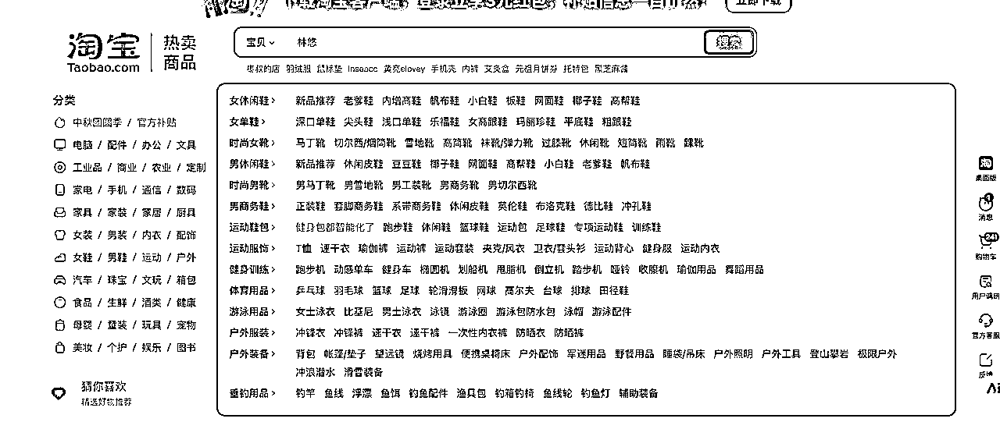
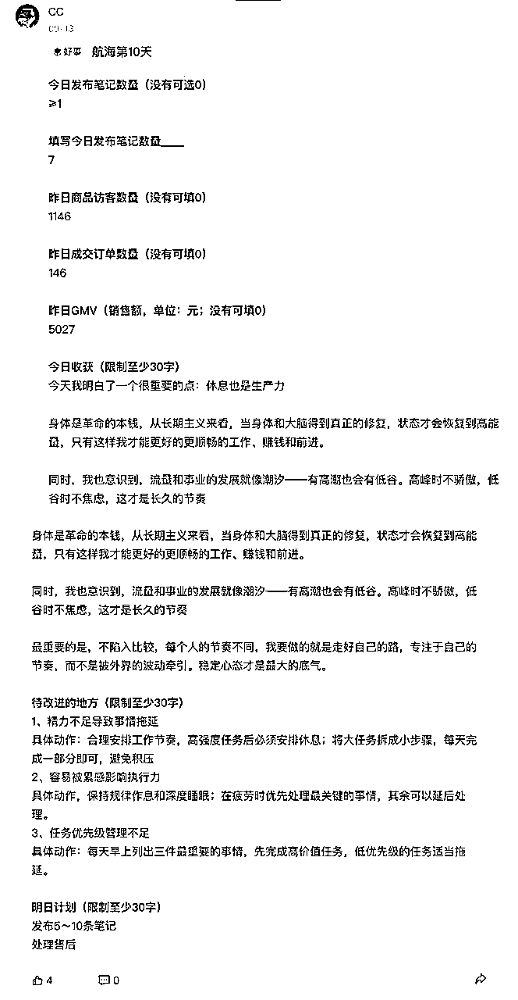

来源：https://wv3ifdby2n1.feishu.cn/docx/MkCvdVnY2onj2exo146cFahFned
首先，非常感谢 @生财有术 搭建了这样一个高质量的学习社群，也感谢这次小红书航海的所有组织者、教练和工作人员。
没有这个环境，我可能还在迷茫中打转，是这里让我真正跑通了思路、找到方向。
这篇内容，就是我从 0 到 1 做小红书电商的一次复盘。既是对自己这段时间的梳理，也希望能给还在探索和迷茫中的伙伴们，带去一些参考和启发。
大家好，我是 CC。
在加入生财之前，我有过多段不同的工作与创业经历：做过 婚礼顾问、公关广告策划、电商直播带货、主持人、旅游博主，也曾是一名 模特。一路走来，我发现自己始终离不开对 美 的追求与表达。
其实，早在两年前，我的朋友 @单单 就推荐过我加入生财。但那时的我有一份主业工作，心里没有安全感，也觉得没有精力去兼顾两份事业，所以一直没有行动。
直到今年，我看到朋友通过生财的航海，不仅赚到了钱，还越做越好，我才真正被触动。与此同时，职场里的内耗让我逐渐清醒——我不想再继续消耗自己。于是，在今年 六月，我毅然选择了 裸辞，并在 6 月 23 号 正式加入生财，开启了新的阶段。
回头看，这次选择加入生财，是我 最正确的一次决定。在这里，我真正打开了眼界，深刻体会到：一个正确的环境和氛围能给人带来的滋养，不仅让能力加速倍增、视野提升，更能在无形中推动我不断成长。相比之下，我也更明白了：消耗的环境会让人逐渐枯萎，而充满能量和机会的场域会持续滋养和拉升人。非常感谢生财，让我认识到信息差的重要性，也让我真正理解了知识付费的价值。
加入生财三个月，我通过大量学习、不断摸索和实操，逐渐梳理清楚了方向。相比过往的经历，现在我更明确地知道自己要做什么——那就是 all in 在小红书电商项目上。
这次航海，其实我算是带着已有结果上船。但我想说的是，在我 迷茫、焦虑、不确定 的时候，我也曾不断去翻看那些已经做出成绩的小伙伴们的分享和复盘，从中得到了很大的鼓励，也让我选择了坚持。
同样，今天我也想借这个机会，把我的经历和感受沉淀下来、分享出来——希望能鼓励到每一个像我曾经一样，还没拿到结果、还在迷茫中的小伙伴。
从7月8号开始跟着航海手册实操小红书电商项目，我做的是家纺床上用品赛道的，下面是一些店铺的数据，9月18日刚写稿时GMV还在9w+，第二次改稿9月24日，GMV11.7W+ ，截止9月26日完成稿子，GMV已达到11.9W+，客单价在30+，利润40%，纯利润4.5W+。
利润40%
截止到9月26日，共计发布320条笔记，最高单条笔记曝光7.8w+，支付金额2.9w+，笔记支付订单900+，转化率13.8%。
建议大家重点提高笔记的数量和质量，因为你每发的一条笔记其实堪比在银行“存钱”！！而且小红书是有内容滞后性的，有些笔记可能要过个几个月甚至半年才突然爆起来。
裸辞后的那段时间，其实我经历了很深的焦虑和迷茫。突然从熟悉的职场环境中跳出来，面对未来的不确定性，我心里没有十足的底气，也不知道自己能不能撑得住。
在加入生财之后，我的状态也并不是那么笃定，内心有点慌张，也在质疑自己到底能不能走下去。但每当我想到我的朋友已经在生财拿到了结果，并且越来越好，我就会告诉自己——既然别人能做到，我也一定可以。
于是，我又按下了那个“决心”的按钮：哪怕再迷茫，也要给自己一次全力以赴的机会。
其实我选择做小红书蓝海电商，最核心的原因是和自身的经历、兴趣、能力匹配度高。
高中时期，正值微商火爆。我爸给我买了第一台智能手机，我就在朋友圈卖女装、面膜。那时候我发现自己比同龄人更喜欢赚钱，而且我卖的东西，身边的人愿意买单。每个暑假我也都会去打工，积累了最初的销售和客户沟通经验。
大学期间，我担任过晚会主持人和广播站播音员。因为小时候学过音乐，又喜欢艺术和审美相关的事物，所以机缘巧合进入了婚礼、公关广告策划行业。这段经历让我学会了如何独立执行大型项目，从策划到落地一手包办，这正好为后面做电商打下了基础——选品、拍摄、运营、售后，每一个环节都需要自己推动，而我恰恰享受这种过程。
后来赶上淘宝、抖音直播的风口，我做过电商带货主播和模特，还因缘际会接触到当时很火的韩国女装品牌 Chuu，单场最高做到过 30w+ GMV，这段经历让我验证了自己在流量变现上的能力。
我也做过一段时间旅游博主，从 脚本、模特、文案、配音、选乐 都由我独立完成，做出了几条质量不错的视频。虽然因为办公室内斗而没有坚持下去，但过程让我积累了内容创作的底层方法，也证明了只要坚持，就一定能跑出结果。
回头看，我是一个学习力和执行力都还不错的人。加入生财后，我更加明白：视野、认知差、信息差才是关键。只要拉满执行力，专注且持续地去做一件事，哪怕每天进步 0.0000001%，日积月累，就是巨大的进步。厚积薄发带来的，往往是意想不到的惊喜。
正因为如此，我选择了直接 all in 小红书电商。它既能结合我的过往经验和优势，也符合未来趋势，更重要的是，我真的热爱并享受这个过程。
在做项目的过程中，我一直把自己当成一个游戏玩家。
这种心态，让我能更轻松地进入状态，把执行变成一种玩游戏的过程，而不是枯燥的任务。
（1）设备：2台手机+2个手机号
（2）开通店铺：1个店铺+2个账号（做关联账号）
（3）养号阶段：三天互动养号法
（4）流量测试：发布类目相关笔记
开始的前两天，我给自己定了一个很简单的节奏：上午专注选品，下午就沉下心来看航海手册。因为在选品阶段，其实大家对“品”都没有什么概念，所以我就把它当成一个练习的过程，多刷一些不同类目的商品，去慢慢建立自己对“品”的认知。
空闲的时间，我就刷小红书养号，去自己相关的一些类目的笔记下面评论点赞加收藏，多做一些互动，这个步骤，我当时持续了三天，在第三天的时候发布了和自己类目相关的测试笔记。
首先电商的品类非常多，新手一开始容易眼花缭乱，什么品都想试，到最后很容易一头雾水，在这里给大家两点建议：
（1） 个人兴趣：选择感兴趣的品类，这样才能更长久去做，也不会轻易放弃。
（2） 实拍思维：小红书更吃实拍感，所以在选品之前也要优先考虑自己能实拍、能被生活场景化的产品，这样订单转化会更稳定。
（1）抖音选品法：打开抖音APP——点击左上角侧栏的抖音创作者中心——打开电商带货——选择全部工具——找到创意中心——点击图文（选择图文24小时内更新，筛选自己感兴趣的类目）
（2）淘宝选品法：可以打开淘宝网页版大致了解电商有哪些类目，每个类目下面有什么品，可以筛选出自己最感兴趣的2个类目和品。然后到小红书搜一下，感兴趣的这个类目或者品，在小红书有没有人卖得好的。
（3）选品公式：低粉账号(≤3000越少越好)+近期爆文(1月内)+高互动评论区=潜力爆品
（4）跟品：可以用小号来关注同行，同行就是我们最好的选品库。
抖音选品法

淘宝选品法
当你确定了要做的品类后，第一步不是马上去找工厂，而是——先去买同行卖得好的产品。用你的小号悄悄下单一份，最好是那种爆款。
为什么要这样？因为只有你自己真正摸过、用过，才知道它到底好不好卖。货到手之后，先拍开箱照、细节照，这些照片后面都能直接用在笔记里，一举两得。
接着，把这个产品截图丢到 1688 去搜同款，多找几家工厂聊一聊，看看价格、供货量、发货速度。别急着拍板，一定要多对比。因为小红书的用户不是随便买，他们想的是“买得好”，所以质量、细节、售后都很重要。可以说，你选的工厂，就是你未来生意的底气。
小白最容易踩的坑：
刚开始的时候，不要想着搞创意，先模仿同行。怎么模仿？很简单：
为什么要这么干？因为这能帮你快速摸清小红书的“调性”，避免一上来就踩坑。等你模仿个十来条，心里自然会有感觉：哪些图容易爆，哪些文案用户爱点。
等你有了感觉，就可以在里面加点自己的审美了。比如换一种更舒服的配色、加上你自己的生活场景、写一些你平时的表达方式。这个时候，你才算是真正开始“二创”，而不是一味抄。
小白最容易踩的坑：
前期我们写笔记标题和文案的时候，完全可以先照着对标账号来模仿。但光靠自己想，有时候很快就会没灵感，这时候就可以借助 AI 来帮忙提效。
举个例子，你可以直接给 AI 一个指令：
“你是一位小红书资深运营，我的产品是【XX】，现在有一个爆款标题是【XXXX】，请帮我分析这个标题为什么有效，并且延伸出 50 个类似的标题。要求口语化，不要写成硬广，要像普通用户随口分享的感觉，字数在 16–22 个字之间。”
AI 会帮你批量生成一堆备选标题。拿到之后，你再用自己的语言改一改，去掉明显的“AI 味”，让它更生活化。比如加上你平时的表达习惯、自己的小语气词，这样读者就会觉得更真实。
最后，把这些标题和文案整理进飞书多维表格，做成属于你自己的“子弹库”。以后每天发笔记的时候，直接从这里挑就行，既省时，又能保证输出不断档。
做小红书账号，其实就一个核心问题：你到底想吸引谁？
为什么要先想清楚人群？因为小红书的流量逻辑，本质上是“搜索 + 推荐”。你的人群是谁，决定了他们会搜什么关键词。只有关键词精准，你的笔记才能被他们看到。
举个例子：
说白了，账号定位清晰，选品和文案才不会乱。对我们做电商来说，最终目的还是把产品卖出去，所以提升转化率才是最重要的。
不管是刚起步还是已经跑起来，每周的复盘真的很重要。
为什么？因为复盘能帮你看清楚：
但复盘不是光看销量数字，更重要的是总结方法。比如：
这样一周周下来，不仅仅是销量提升了，你自己的思路也会越来越清晰，形成一个闭环。简单说就是：看数据 → 找问题 → 调整 → 再验证 → 留下经验。
人工干预，说白了就是人为给笔记刷销量，评论区引导等。它可以直接影响一条笔记的转化和寿命。
这里还有一个细节：一个很大的信息差，可以刷退款单。
什么意思呢？就是用小号先下单，然后24小时后再申请退款。
这样笔记在前期会有销量数据的积累，但最终不会产生真实发货成本。
不过要注意，这种方式只能少量、点到为止，属于“人工干预”里的灰色玩法。
如果过度操作，很容易被平台察觉。
我店铺没有刷过销量，但是看其他小伙伴这样操作过。所以更稳妥的方式还是：通过真实下单和评论互动，慢慢把账号做稳。
前期单量不多的时候，我还能自己接待，虽然费时费力，但还勉强扛得住。哪怕用了机器人辅助，也只是治标不治本。
转折点出现在航海日志。因为坚持认真写日志，我得到了晴子教练的点评，她给了我很多中肯建议，附上我的航海问题和回答截图，也给大家做个参考
后来加了微信，我主动问了她客服方面的事情。说实话，当时我很犹豫：因为有的客户真的很难缠，我怕外包客服处理不好，店铺分数被拖垮。
但正好那段时间，笔记流量爆发，每天平均 30+ 咨询，我自己接待了几天后，几乎要被压垮：
主要是自己要写内容，发笔记，还要处理客服信息，
外包前：平均回复时长 >10分钟，因为客户断断续续进线，所以我一天10多个小时都要耗着，片段式的时间拍作品，但也干不好，所以情绪也常常崩溃。
外包后：回复时长缩短到 3分钟，当日解答率 95%+，转化率提升了 0.6 个点，我每天能腾出 3 小时以上专注内容与选品。
外包之后，我最大的感受是：整个人轻松了。以前被客户情绪牵着走，一天都心堵；现在客服有序处理，我终于能把注意力放回到内容、选品、店铺运营和长远规划这些更有价值的事情上。
回过头看，这其实是一种成长：创业不是一个人死扛，而是要学会在合适的节点放手。
在项目启动的第一个月，我其实过得挺煎熬的。每天发笔记，小眼睛数量还是很少，转化率也不高，单子零零散散，有时候甚至一天一单都没有。眼看正反馈越来越少，我的焦虑却一点点积累。
就在这种状态下，还发生了一件更糟心的事——我被骗了一万块钱。
虽然现在我已经能够很平静地说出来，但是我回想当时其实我是有被吓到的，哪怕我已经不是刚出社会的小朋友了，也还是会被吓到。
可奇怪的是，事发那一刻，我意外地冷静。我没有向任何人抱怨或是哭诉，而是直接选择了报警、做笔录，把流程走完。处理完所有的事情后，我还是照样回到了咖啡店，继续工作。
这件事让我突然意识到：人比自己想象中更强大。也没有什么好恐惧的，把每一件事情都当作是一个惊喜与体验，就没有什么真的能打垮我，我选择不评判，我允许它发生，当你接受了这些事情发生的时候，很多恐惧也就不存在了。
也正是这个经历，让我的心态稳下来了。我不再天天盯着小眼睛的数量，不再拿自己和竞争对手比较，也不再焦虑别人的订单量。
后来我仔细分析自己的笔记数据，数据最好的那个并不是我按照1:1去模仿对标笔记的内容，而是我自己的自由发挥下拍摄的内容，结合自己审美拍的。
那一刻我决定：与其一味模仿，不如相信自己。从那以后，我开始尝试用自己的审美去做封面、去打磨内容，再结合数据不断优化。也正是这个转折，让我在 8 月底迎来了人生中第一篇爆款笔记。
爆款笔记带来了一波咨询和订单，本来是件值得兴奋的事，但它也让我第一次真切感受焦虑的那一面。
开始咨询量10多个，后来几十个。我一个人要同时盯着选品、拍摄、修图、发笔记，还要兼顾客服和售后，根本分身乏术。尤其是客服和售后，真的太耗时间和精力了
有些客户一句话就能问半天，甚至还有无理取闹的，气得我一整天心情都被带跑偏，连饭都顾不上吃，更别提拍新作品了。那段时间我感觉自己不是在做生意，而是被售后和客服“绑架”，每天都在被动救火，完全没有多余的精力去创造内容。
航海期间，正好赶上笔记流量爆发的阶段，我每天都被各种事情推着往前走：前端要盯笔记和运营数据，后端要回复客户消息、处理售后、跟供应商沟通发货。忙到最后，甚至累到生理性呕吐，完全是靠着肾上腺素在硬撑。😂
但即便这样，我依然坚持每天按时写航海日志。现在回头看，写日志就是一种“心流模式”——当你全身心投入一件事时，其实根本感觉不到累。



也正是因为我每天坚持写日志，我得到了晴子教练在群里的点评。那一刻我特别有感触：认真记录，不仅能让自己看到进步和不足，还能被教练看见，从而收获到自己原本意识不到的认知。
后来我加了晴子教练的微信，想问她客服的事情，后来一直问她问题，很多时候我带着问题甚至情绪去问，她虽然微信回复得不快，但是每次都很耐心回答，她真的是一个情绪特别稳定的一个人，我和她沟通都减少焦虑，而且她的回答都能直戳核心，然后我就照着执行。她帮我把“后端流程”这一块一点点捋顺，让我从混乱到逐渐清晰。
在这里我真的很感谢她，同时也想分享两点体会：
客服外包的必要性

在航海的过程中，我不仅拿到了结果，也在思维和习惯上有了新的提升。
以前我总觉得，把前端（内容、流量）做好就够了。但实践下来才发现，后端的客服、供应商环节同样重要。
客服的回复速度直接影响店铺评分，供应商的发货稳定性决定复购和口碑。
所以现在我会把整个链条当成一个闭环来看：前端引流，后端承接，流程要顺、沟通要清，才能真正长久。
航海期间，我意识到复盘是必不可少的。光解决问题还不够，还要把问题和解决方案沉淀下来。
我给自己定了一个习惯：每周至少做一次复盘，内容包括“本周问题 → 处理方式 → 下次怎么避免”。这样遇到同样的情况时，就能直接照搬经验，不用再走弯路。
给大家看一条我的真实复盘记录（节选）：
复盘日期：9月
问题 1：客服回复不及时 → 客户等待时间过长，导致两单流失。
处理方式：尝试设置自动回复，缓解等待情绪。
优化方案：联系外包客服，下周开始试用。
问题 2：售后问题堆积 → 导致客户情绪没有及时得到宣泄与安抚
处理方式：第一时间安抚客户情绪，及时响应，通过打电话或者线上积极沟通的方式，站在客户角度解释并且解决问题，确保客户体验得到恢复。
优化方案：建立售后问题分类与优先级处理机制，避免堆积；增设快速响应环节（自动回复+人工跟进），让客户在第一时间感受到被关注。
问题 3：产品负反馈增多 → 导致店铺分下降，客户体验感不好
处理方式：第一时间联系差评客户，耐心沟通，了解真实诉求，积极提出补偿方案（换货/退货/打款补偿）；对反馈问题进行汇总，及时反馈给供应商，逐步优化产品品质；针对恶意差评，收集证据后申诉，减少无效损害。
优化方案：加强发货前质检，从源头解决问题；完成售前话术，提前告知客户产品特性，避免因期望与实际差距导致差评；每周汇总负面反馈，分析主要原因，快速调整策略。
在航海过程中，我慢慢学会了一件事：遇到问题时，先别慌！！
每次卡住的时候，我会让自己先静下来，去看清楚问题的根源到底在哪里。
因为我理解到这是一个过程，不是一个人要完美无缺，而是持续迭代、边做边修正。
有时候问题不是“做得不好”，而是因为流程没打通；有时候不是“我不行”，而是阶段性必经的过程。
所以现在我会：
这样一来，心态会越来越稳，因为你会知道：问题不是否定，而是提醒。做生意就是不断迭代，边走边修。
我印象特别深的一句话，是在日志点评时教练提醒我的：不能舍不得花钱，不能什么都自己干。
当时我店铺的 GMV 5000 多，利润率 40%，也就是说每天纯利润有 2000+。我算了一笔账：客服外包一个月 1200 元，其实完全负担得起，就是一天的利润而已，所以我好像也可以接受。
只是没用过外包，心里多少有点担心。
但最终我还是尝试了，结果发现体验非常好：
客服很专业，很多重复问题不用我操心，我把客服外包出去之后，睡了2天觉，因为以前真的让我心力交瘁，
我终于能把时间集中在选品和内容上，把精力放在“拉长线、走长远”的事情上
我学会了放手，把自己从琐碎和情绪中解放出来
我更明白了，创业的关键不是死扛，而是抓住核心。
同时我还发现，售后问题其实高度重复：物流、退换货、产品细节，客户问来问去就那些。我现在也在思考，能不能通过笔记或短视频把这些问题提前解释清楚，既能减轻客服压力，也能提升客户体验。
回头看，前期我为了把事情做起来，真的是靠硬撑，付出了很多心力。每一步看似很缓慢，但实则一直在推进。到了后来，把客服外包、工厂对接理顺后，我整个人才真正解放出来。
这件事让我彻底明白：赚钱不是靠自己把所有细节死扛，而是学会取舍和放手。
钱能带来安全感，但如果在这个过程中自己一直被压榨、被困住，就变成了金钱的奴隶，那就偏离了本质
最终，我们追求的不是收入数字，而是能在比较自由、轻松的状态下去创造价值，去经营生活。
这段经历让我彻底明白：做生意的终点不是“更忙”，而是“更自由”
最后，我也很感谢晴子教练。在我思绪像一团乱麻的时候，她几句话就能帮我找到核心问题，让我意识到：用正确的方式沟通，持续复盘和总结，边做边优化，才是真正的成长路径。
所以现在我更笃定了：
把简单的事情重复做，把重复的事情用心做，把用心的事情坚持做。
在这里，我也附上晴子教练分享过的关于电商后端的内容：超级术帖子：https://scys.com/articleDetail/xq_topic/5125812545148544电商卖货保姆级实战手册(个人玩法/团队玩法0-1/1-10必看)
这篇内容值得反反复复看，也希望后面生财能有这样1-10的航海，可以帮助我们优化流程，把业务放大，继续迭代。
到这个阶段，我也明白为什么自己总觉得“被推着走”。那种累，不是瞎忙，而是因为我正处在上坡路。
上坡路必然会累，偶尔也会有撑不下去的瞬间，觉得自己快要被压垮。但后来我慢慢接受了一个事实：痛苦其实是成长的门票。
每一次的焦虑、卡点、甚至崩溃，都是命运在提醒我：你要升级了。
就像打游戏，打 Boss 的时候总是最难的，但一旦熬过去，就能拿到新技能。
所以现在我不会再害怕痛苦，而是学着和它共处，把它当成一种礼物。因为我知道，只要撑过去，等待我的就是更高的阶段。
如果说拿到结果让我兴奋，那在航海过程中，我觉得最宝贵的收获，其实是沉淀出一套“能反复用”的方法论。
以前写日志只是记流水账，现在我会用“原因 → 方案 → 结果”的结构去复盘。
比如：销量下滑（原因）→ 改封面+标题（方案）→ 点击率提升 30%（结果）。
这样写，不仅能让我更清楚问题出在哪，还能沉淀成可复制的方法，下次遇到同类情况直接套用。
航海群的氛围真的很好，大家提的问题和写的日志就是一个个“宝藏”。
我养成了一个习惯：只要教练在群里解答别人问题，如果是我需要的点。我也会立刻记下关键点，马上应用到自己项目上。
结果就是，很多弯路我都提前避开了。
说实话，如果让我一个人慢慢做，很多事都会拖延。
但因为航海有时间节点，有团队氛围，还有强制打卡，我不得不跟上节奏。
很多原本计划“下周再弄”的事，反而因为大家一起推进，被我更快完成。外部的集体节奏，就是我最大的执行力加速器。
每周的教练直播，都是一次次升级打怪的机会。
比如银河教练、百能教练的分享，有时一句话就能让我换个角度看问题，马上打开新的思路。
而这些小的启发，累积起来就是巨大的改变。
可以说，航海不仅让我拿到了结果，更重要的是帮我建立了一套能持续迭代的方法论。
解决的每一个卡点，都是在积累经验值；当经验值一点点叠满的时候，就是你升级的那一刻。
写到这里，我特别想把自己一路走来的感受，整理成 10 条建议分享给大家。它们不是大道理，而是我真真实实踩过的坑、流过的泪、得到的经验。希望你看到的时候，能少走弯路。
刚开始的时候，流量少、订单少，真的太正常了，我记得我前期最惨的一天，小眼睛一个都没有，订单也是偶尔零散出单，大部分时间是挂零的。但其实大家只要把目光专注于当下，对结果不要抱有执念，只要去做了，时间会告诉你答案～
大家可以用“问题—原因—方案—结果”去写。比如说：销量掉了（问题），封面没吸引力（原因），换了封面（方案），点击率提升 30%（结果）。这样写下来，每次复盘都能复用，下次遇到同类问题，直接照着方案走，省下不少时间。关键是！回头去看自己的复盘日志的时候，你会发现：哇！原来我进步了这么多！！
我以前很喜欢单打独斗，闭门造车，但其实这样很容易陷入自己的思维陷阱里出不来。我们可以适当的借助外力来去解决自己的问题和卡点。航海群就是现成的学习场，教练的点评、船友的提问，都是宝藏。我就有好几次，明明卡了很久没解出来的问题，结果看到别人问了一句，教练随手解答，我马上照搬到自己项目里，立刻解决。真心建议大家多问、多看、多学，抄作业也是一种聪明。
这是我亲身大坑。爆款来了之后，我一天三十多个咨询，全靠自己接。结果呢？累到胃疼，情绪天天崩，连拍内容的心思都没有。后来在晴子教练的点拨下，我算了一笔账：客服一个月才 1200 块，而我一天的利润就有 2000 多。换句话说，只要撑得住一天，我就能负担一个月的客服。那一刻我才明白，创业不是自己死扛，而是要学会分工。
很多时候，我们觉得自己每天都在干活，但结果没出来，就是因为光忙不复盘。我现在每周固定抽半小时，写下本周的坑和解决办法。比如：哪条笔记点击率高，为什么？哪个品断货了，怎么补救的？这样一条条记下来，长久累积就是一份“生意说明书”。以后遇到问题，直接翻自己的笔记就能找到解法。
以前我特别怕花钱，总想着能省则省。结果因为设备差、工具不全，很多时候效率低得可怕。后来我开始舍得投了：买灯光、买好点的手机、找客服外包。反而发现越花越省心，省下来的时间去拍一条爆款笔记，早就把钱赚回来了。投资自己和项目，是最划算的支出。
我吃过最大的亏，就是跟风选品。看同行卖得好，我也直接上，结果品质差到吐血，退货一堆，差评全炸了。后面我意识到问题之后，每次选品都自己先下单试用：看看物流快不快，产品质感怎么样，售后稳不稳。只有亲身体验过，才知道这个东西能不能卖得长久。小红书用户要的是“买得好”，不是“买得便宜”。
我有过一段时间，追求拍得特别精致，结果效果反而一般。后来我尝试随手拍生活场景，没想到点击率更高。小红书和别的平台不一样，用户喜欢的是真实感，就像是朋友安利一样。别怕自己拍得不够高级，反而是“真”，能打动人。
说实话，被骗 1 万的时候，我心态一度很慌。但冷静下来之后，我发现自己并没有被打垮，反而更稳了。痛苦本身就是成长的门票，你之所以觉得累，是因为你正在上坡路。等你熬过去，就是升级的时刻。所以遇到挫折，不要急着否定自己，它可能就是命运在提醒你：你要进阶了。
生意是一个马拉松，不是百米冲刺。短期的数据涨跌很正常，别被牵着走，欲速则不达。每天哪怕只进步 0.0001%，一年下来也是巨大的差别。我第一篇爆款，也是在不断坚持、不断迭代中蹦出来的。真正能拉开差距的，不是天赋，而是持续做、持续改、持续坚持。
以上 10 条，其实都是我走过来的血泪教训。你会发现，它们看起来很简单，但真正能做到的人很少。赚钱从来不是看谁跑得快，而是谁能跑得久。冷清期熬得住、问题能复盘、舍得投资、敢于放手、稳住心态，坚持走下去，总会迎来属于你的爆款。
人生没有白走的路，每一步都算数。希望当你看到这篇复盘的时候，能少一点焦虑，多一点笃定，知道自己并不孤单。
最后，我要感谢在这个航海期间所帮助过我的所有人：
首先我最要感谢的是引领我加入生财有术的朋友单单，如果不是她，我可能现在还在原地打转，不会接触到这个让我真正开始行动、开始改变的平台。一路走来我收获到的不只是技能和知识，更多的是心态上的转变——学会了专注、坚持，也看见了自己可以不一样的可能。这份引领，对我来说就是命运的转折点。
其次，我要感谢 生财有术。感谢你们搭建了一个如此高质量的学习社群，也感谢它组织了这次小红书航海。在这里，我不仅收获了方法和技能，更重要的是看清了方向，认识到信息差的价值，体会到一个对的环境可以让人被不断滋养、不断拉升。

感谢@9领队，把整个航海群的节奏安排得井井有条，让大家能在清晰的节奏下稳步前进。在写稿的期间，领队也一直给予我耐心的引导和信任，让我能够坚持把内容完成。无论是在思路卡壳的时候，还是在动力不足的时候，领队的鼓励都让我感受到团队的温暖和力量，再次感谢领队的陪伴与支持。


谢谢所有在航海群里耐心陪伴、答疑解惑的教练们——百能教练、晴子教练、银河教练、薇薇教练，谢小仙教练。
主要是百能教练，一直回复其他伙伴的问题，正是因为你们的指导，我才能在项目推进的过程中快速解决一个又一个卡点。
尤其要特别感谢@晴子 教练，你帮我把那些乱糟糟的“毛线团”一样的问题，一点点捋顺、拆解，让我逐步搭建起属于自己的清晰体系。
也要感谢我的志愿者老师 @瑜瑜，每次都准时提醒我日志打卡、直播开始，直播结束后还会整理总结，你就像一位默默陪伴鼓励我的的节奏官，让我在执行的过程中更稳、更踏实。
最后，我要感谢那个一直没有放弃的自己。因为每一次选择坚持，都让我比昨天更接近目标，也让我更加坚定：只要方向对，就值得一直走下去。
我想送自己和所有伙伴一句话：把人生中的每一次尝试，都当作一场独特的体验。 愿力是种子，行动是浇灌，时间会告诉我们答案。等到回头看时，你会惊讶：原来早已长成了一棵参天大树。
在你坚持不下去的时候，就再等一等，再坚持一下，也许也就是那么一下，你就能收获到不一样的结果～
人生没有白走的路，每一步都算数。
让我们一起走下去，一起成长。